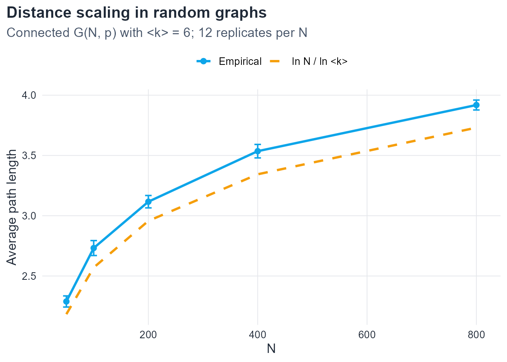
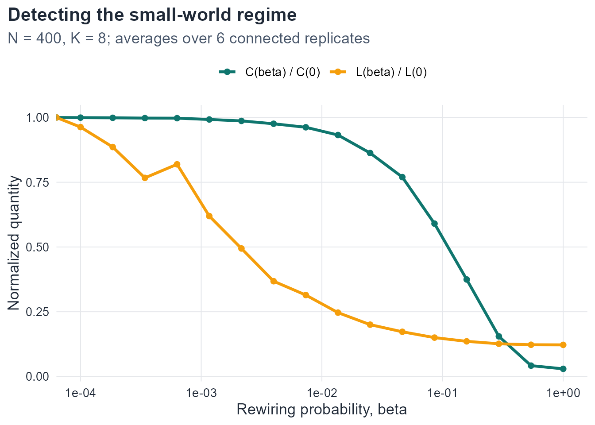

5.1 Exercise 1. From branching to logarithmic distance
Part 1. The sum is a finite geometric series with first term 1 and ratio \langle k \rangle \neq 1:
N(d)
=
\sum_{j=0}^{d}\langle k \rangle^{j}
=
\frac{\langle k \rangle^{d+1}-1}{\langle k \rangle-1}.
The modeling assumption is a tree-like branching approximation: each new neighborhood layer multiplies the previous layer by \langle k \rangle, with no overlap between neighborhoods, no loops, and no boundary effects from the finite vertex set. Equivalently, the local exploration is treated as a branching process on an infinite tree with offspring mean \langle k \rangle.
Part 2. Set N(d_{\max})\approx N. For large N and \langle k \rangle > 1, the last term dominates the geometric sum, so
\langle k \rangle^{d_{\max}}\approx N.
Taking natural logarithms of both sides,
d_{\max}\ln\langle k \rangle \approx \ln N,
and dividing by \ln\langle k \rangle > 0 yields
d_{\max}\approx\frac{\ln N}{\ln\langle k \rangle}.
The same scaling is then used as a heuristic for the average path length L(G) in random-like networks (Newman, 2010; Strogatz, 2001).
Part 3. The estimate is not exact for three related reasons.
Neighborhood overlap. In a real graph, two vertices at distance d from a source may share neighbors. The branching count therefore overcounts reachable vertices once balls start to collide.
Loops and finite size. Cycles return the walk to previously visited vertices, and the exploration must stop when the ball saturates the finite set V. Both effects cut off pure exponential growth.
Average versus diameter. The derivation targets a covering scale d_{\max} closer to a diameter than to the mean pairwise distance. Even when D(G) scales like \ln N / \ln\langle k \rangle, the average L(G) can differ by a slowly varying factor; the logarithmic law is a scaling statement, not an identity.
Part 4. A constant bound such as “exactly six steps for every pair” would mean L(G)=O(1) as N\to\infty. Logarithmic growth L(G)\sim c\ln N still grows, but extremely slowly: doubling N only adds a constant c\ln 2. So “a few steps” in a huge system is consistent with logarithmic scaling, not with a universal fixed integer independent of size.
5.2 Exercise 2. Lattice scaling and the surprise of small worlds
Part 1. Pack N vertices into a d-dimensional cube (or torus) of side length \ell. Then N\sim \ell^d, so \ell\sim N^{1/d}. Graph distance on a regular lattice is proportional to Euclidean (or \ell_1) separation measured in lattice spacings. Typical and maximal separations are both of order \ell, hence
# A tibble: 4 × 2
law value
<chr> <dbl>
1 ln N 13.8
2 N^(1/3) 100
3 N^(1/2) 1000
4 N 1000000
The logarithmic value is an order of magnitude smaller than the three-dimensional lattice scale, two orders smaller than the two-dimensional scale, and many orders smaller than the one-dimensional scale. Polynomial lattice laws and the logarithmic random-graph law are therefore qualitatively different families.
Part 3. Lattice intuition says that covering a large geometric system requires a path whose length tracks the linear size N^{1/d}. Logarithmic distances mean that the number of reachable vertices grows roughly exponentially with radius, so the same N is covered in far fewer steps. The surprise of the small-world effect is not that paths are finite, but that they are dramatically shorter than low-dimensional geometry would suggest (Strogatz, 2001; Watts & Strogatz, 1998).
5.3 Exercise 3. The regular ring lattice: degree, distance, and clustering
Part 1. By definition, vertex i is joined to \{i\pm 1,\ldots,i\pm K/2\} (indices mod N). These are K distinct neighbors whenever N > K, so every degree equals K. The handshaking lemma then gives
2|E|=\sum_v k_v = NK \implies |E|=\frac{NK}{2},
and the average degree is \langle k \rangle = 2|E|/N = K.
Part 2. On the ring, the farthest vertices from a given source lie roughly opposite on the circle, at cyclic distance about N/2. Each step along the lattice can advance by at most K/2 positions (the farthest clockwise neighbor). The number of steps needed is therefore about
\frac{N/2}{K/2}=\frac{N}{K}.
Averaging over pairs rather than only antipodal pairs replaces N/K by a constant factor of the same order, conventionally written
L(0)\approx\frac{N}{2K}.
This is a heuristic scaling estimate, not an exact diameter formula.
Part 3. Fix vertex 0 and write m=K/2. Its neighborhood is
\Gamma(0)=\{-m,\ldots,-1,1,\ldots,m\}.
Assume N is large enough that cyclic distances among these neighbors coincide with ordinary absolute differences. Two neighbors j<k are adjacent iff k-j\le m.
Both positive: number of pairs =\binom{m}{2}.
Both negative: likewise \binom{m}{2}.
Opposite signs: for each a=1,\ldots,m, the negative neighbor -a connects to positive neighbors k with k\le m-a, giving \sum_{a=1}^{m-1}(m-a)=m(m-1)/2 edges.
# A tibble: 3 × 2
K C0
<dbl> <dbl>
1 4 0.5
2 6 0.6
3 10 0.667
As K\to\infty, C(0)\to 3/4. Even a very wide local neighborhood on the ring remains far from a clique: many pairs of neighbors are still too far apart (on the ring metric) to be linked, so clustering saturates below 1.
5.4 Exercise 4. Shortcuts, clustering, and normalized observables
Absolute values of C and L depend on N and K. Normalizing by the lattice baselines removes that dependence and makes the shape of the order-to-randomness transition comparable across parameter choices: one sees how quickly each quantity leaves its ordered starting point as \beta grows.
Part 2. In the ring lattice, traveling between distant arcs requires many local hops. A single rewired long-range edge connects two previously remote regions and collapses many shortest paths that used to traverse the long arc — so L drops sharply. Clustering, by contrast, is a local triangle count. If only a small fraction of edges is rewired, most neighborhoods still look like lattice neighborhoods, so most triangles survive and C decreases slowly. This is the core asymmetry of the Watts–Strogatz mechanism (Watts & Strogatz, 1998).
Part 3. In the small-world regime one expects
\frac{L(\beta)}{L(0)}\ \text{substantially smaller than }1,
\qquad
\frac{C(\beta)}{C(0)}\ \text{still close to }1,
while clustering remains much larger than in a comparable random graph. That is exactly Definition def-small-world-regime: short global distances coexisting with retained local order.
Part 4. Short paths alone do not identify the model. An Erdős–Rényi graph achieves small L by making edges globally random, which destroys local order and yields C\approx p (typically tiny in the sparse regime). A Watts–Strogatz graph in the small-world window keeps most lattice neighborhoods intact, so clustering stays high while shortcuts restore global reachability. The models agree on one metric property and disagree on mesoscale structure.
5.5 Exercise 5. Interpreting small-worldness and the limits of Watts–Strogatz
The inequality \sigma>1 means that, relative to a random null model with similar size and mean degree, clustering is elevated more than path length is inflated. Equivalently: the network is much more clustered than random, while distances remain comparable to random. Clustering alone is insufficient because a pure lattice also has very high C, yet fails the small-world test through large L (which drives \sigma down via a large L/L_{\mathrm{rand}}).
Part 2. Watts–Strogatz rewiring preserves the number of edges and only mildly perturbs degrees: most vertices stay near degree K. The model therefore cannot generate hubs or heavy-tailed degree distributions. Degree-dependent clustering (e.g., low-degree vertices in dense cores, hubs bridging communities) likewise requires heterogeneity or hierarchical growth mechanisms absent from homogeneous rewiring. The missing ingredients are growth and preferential attachment — the subject of the next chapter (Albert & Barabási, 2002; Barabási & Pósfai, 2016).
Part 3. A large \sigma is evidence of the phenomenology high-C/low-L relative to an ER null model. It does not identify a generative mechanism. Many processes (community structure, geographic networks with occasional long ties, hierarchical models, etc.) can produce \sigma>1. Claiming that \sigma=4.2 “proves” Watts–Strogatz rewiring confuses a diagnostic index with a unique causal model.
5.6 Exercise 6. Distance scaling in random networks
ggplot(scaling_tbl, aes(x = N)) +geom_line(aes(y = L_emp, color ="Empirical"), linewidth =1.1) +geom_point(aes(y = L_emp, color ="Empirical"), size =2.2) +geom_errorbar(aes(ymin = L_emp - L_sd, ymax = L_emp + L_sd, color ="Empirical"),width =12, linewidth =0.7) +geom_line(aes(y = L_theory, color ="ln N / ln <k>"),linewidth =1.1, linetype =2) +scale_color_manual(values =c("Empirical"= course_cols$blue,"ln N / ln <k>"= course_cols$gold )) +labs(title ="Distance scaling in random graphs",subtitle =sprintf("Connected G(N, p) with <k> = %d; %d replicates per N", mean_k, reps),x ="N",y ="Average path length",color =NULL )

Empirical average path length in connected ER graphs with mean degree 6, compared with ln N / ln 6.
Interpretation. The empirical curve tracks the logarithmic prediction and grows slowly with N. Agreement typically improves as N increases, because the branching heuristic becomes more accurate in large sparse graphs and finite-size boundary effects weaken. At small N, neighborhood overlap sets in quickly, connectivity conditioning biases the sample toward slightly more cohesive graphs, and the prefactor hidden in “\approx” matters more — so modest vertical offsets are expected.
5.7 Exercise 7. Identifying and quantifying the small-world regime
Show code
sample_connected_ws <-function(size, K, beta, max_iter =100) {stopifnot(K %%2==0)for (i inseq_len(max_iter)) { g <- igraph::sample_smallworld(dim =1, size = size, nei = K /2, p = beta)if (igraph::components(g)$no ==1) return(g) }stop("Could not generate a connected Watts--Strogatz graph.")}
ggplot(ws_long, aes(x = beta, y = value, color = quantity)) +geom_line(linewidth =1.15) +geom_point(size =1.8) +scale_x_log10() +scale_color_manual(values =c("C(beta) / C(0)"= course_cols$teal,"L(beta) / L(0)"= course_cols$gold )) +labs(title ="Detecting the small-world regime",subtitle =sprintf("N = %d, K = %d; averages over %d connected replicates", n_ws, K_ws, reps),x ="Rewiring probability, beta",y ="Normalized quantity",color =NULL )

Normalized path length drops quickly with beta while normalized clustering remains high over a wider interval — the small-world window.
The small-world regime is the interval of \beta in which L(\beta)/L(0) has already fallen substantially while C(\beta)/C(0) remains comparatively close to one. In a typical scan this appears at small but positive \beta (often roughly 10^{-3} to a few 10^{-2}, depending on N and K).
Clustering, average path length, and small-worldness index for ring lattice, Watts–Strogatz, and ER graphs of comparable size and mean degree.
Part 3. The ring lattice has high clustering but large distances. The ER graph has short distances but weak clustering; its \sigma is identically 1 by construction when the null model is itself. The Watts–Strogatz graph in the small-\beta window inherits much of the lattice clustering while its path length approaches the random-graph scale, producing \sigma > 1. The index \sigma therefore summarizes the joint pattern (elevated C relative to random, without a matching inflation of L) that neither C nor L alone identifies.
Albert, R., & Barabási, A.-L. (2002). Statistical mechanics of complex networks. Reviews of Modern Physics, 74(1), 47–97. https://doi.org/10.1103/RevModPhys.74.47
Barabási, A.-L., & Pósfai, M. (2016). Network science. Cambridge University Press.
Newman, M. E. J. (2010). Networks: An introduction. Oxford University Press.